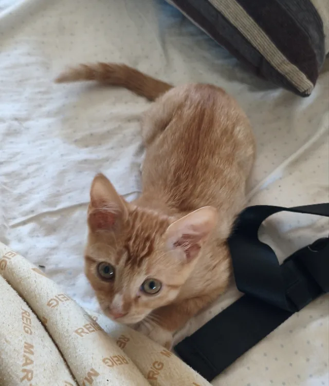

Hola, soy Carles
Carles
Valladares García
Informático, estudiante de Ingeniería Web y valenciano que prefiere un cachopo a una paella.
Benvingut/da al meu lloc! Además de informático, soy persona.
Conoce mi trayectoria
Por dónde empezar
Trayectoria
Mi formación, experiencia laboral y un proyecto para poner en práctica lo aprendido.
Aficiones
Videojuegos, partidas de rol y judo: lo que hago fuera de las pantallas… y también delante de ellas.
Intereses
La música, las películas y las historias a las que me gusta volver.
Contacto
Correo, GitHub y LinkedIn para seguir en contacto.